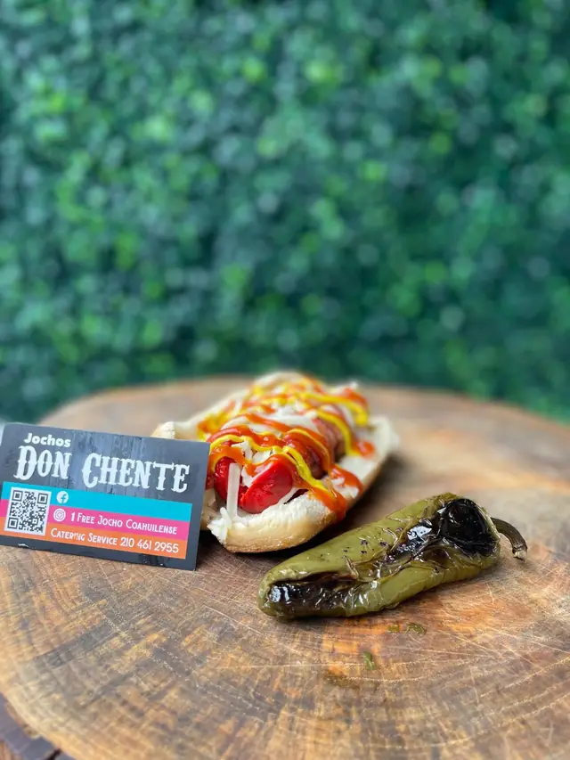
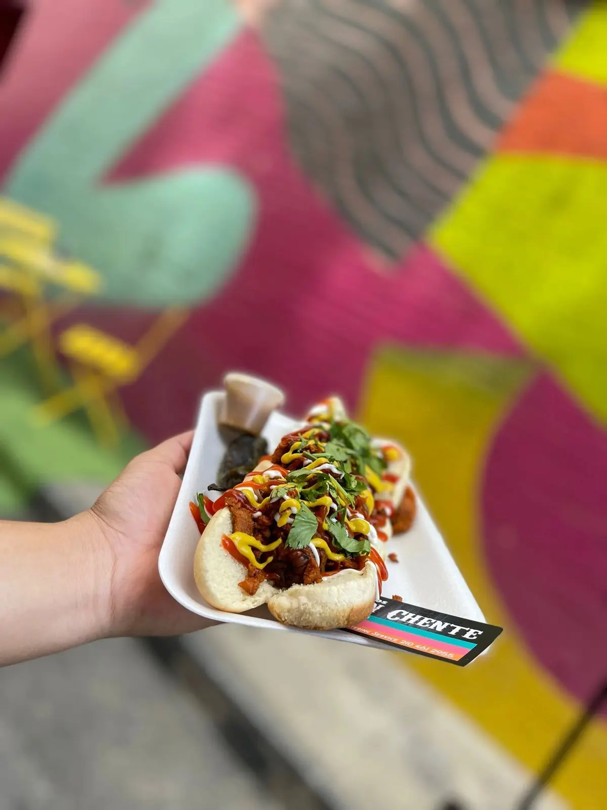
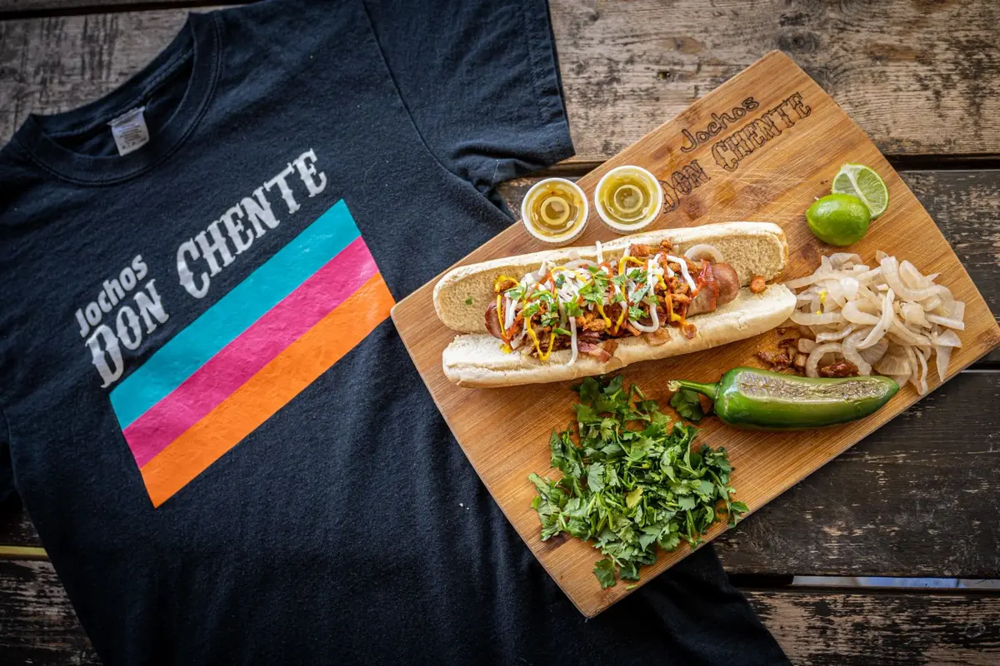

Jocho Coahuilense
$5Salchicha de pavo envuelta en tocino. Cebolla asada, tocino, queso, mayonesa, mostaza y catsup.
Mar–Vie · 2pm–9:30pm
El lugar de los jochos en San Antonio. A la plancha, envueltos en tocino y cargados de asada, pastor o queso flameado. ¿A dónde va la gente? ¡A Jochos Don Chente!

Jochos 101
En el norte de México, al hot dog se le dice jocho. Son un clásico de carrito: a la plancha, envueltos en tocino y cargados hasta que ya no caben en el pan. Don Chente trajo ese estilo al oeste de San Antonio.

Al pastor Envuelto en tocino Chile toreado CilantroLlama y pasa por tu orden, o pídela a domicilio con tu app favorita.
Salimos en la tele
The Texas Bucket List vino a probar de qué se trata tanto alboroto. Dale play y a ver si aguantas el antojo.

¿Tienes un evento?
Lleva el carrito de jochos a tu fiesta: cumpleaños, quinceañeras, bodas, eventos de oficina, días de partido. Cocinamos en el lugar y tus invitados van a hablar de eso por semanas.
Prueba nuestro éxito
Ven con hambre
Jochos Don Chente
| Lunes | Cerrado |
|---|---|
| Martes | 2:00 pm – 9:30 pm |
| Miércoles | 2:00 pm – 9:30 pm |
| Jueves | 2:00 pm – 9:30 pm |
| Viernes | 2:00 pm – 9:30 pm |
| Sábado | Cerrado |
| Domingo | Cerrado |
Para que sepas
En el norte de México, al hot dog se le dice jocho. Los nuestros van envueltos en tocino, a la plancha y bien cargados con cebolla asada, queso y asada, pastor o queso flameado.
Estamos en 12014 Potranco Rd, San Antonio, TX 78253, en el extremo oeste de la ciudad. Cómo llegar.
Sí. Pide a domicilio por DoorDash, Uber Eats o Postmates, o llama al (210) 461-2955 para pedir para llevar.
Sí. Hacemos catering para cumpleaños, quinceañeras, bodas, eventos de oficina y más. Envía tu solicitud o llama al (210) 461-2955.
De martes a viernes, de 2:00 pm a 9:30 pm. Cerrado de sábado a lunes.